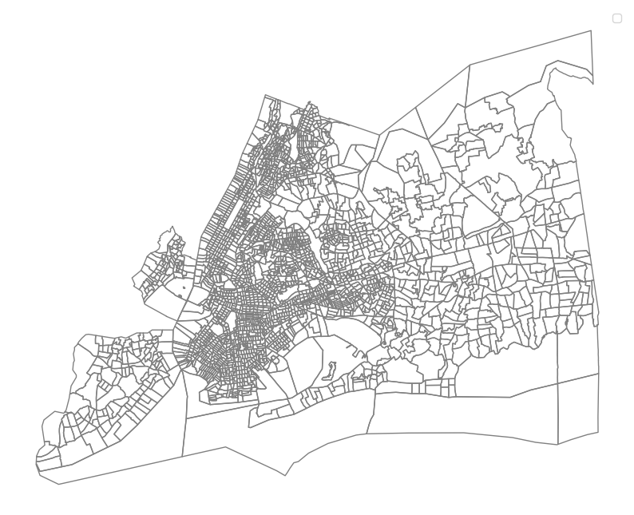

from matplotlib import pyplot as plt
import numpy as np
import pandas as pd
import geopandas as gpd
import requests
import hvplot.pandas
np.random.seed(42)Does NYC Metro Region have a home-job balance?
MUSA 550 - Fall 2023
Jingyi Cai, Shuting Li, Yinan Li
pd.options.display.max_columns = 9991. Data Preprocessing
Geographic Boundary
from IPython.display import Image, display, HTML
# Path to your image file
image_path = 'Pic/County_boundary/map.png'
# Set the width and height you want
width = 800
height = 600
# Display the image with specified width and height
display(HTML(f'<img src="{image_path}" width="{width}" height="{height}">'))
NYC 5 boroughs: - Manhattan: New York County, New York - COUNTYFP = 061 - Brooklyn: Kings County, New York - COUNTYFP = 047 - Bronx: Bronx County, New York - COUNTYFP = 005 - Queens: Queens County, New York - COUNTYFP = 081 - Staten Island: Richmond County, New York - COUNTYFP = 085
Outside NYC counties: - Jersey City: Hudson County, New Jersey - COUNTYFP = 017 (State code = 34) - Long Island: Nassau County, New York - COUNTYFP = 059
Geographical level: by census tract
# We have processed the geographical data
# You can load the NYC Metro Region geographical data on census tract directly
metro_geojson_path = 'Data/Geo/metro.geojson'
metro_gdf = gpd.read_file(metro_geojson_path).to_crs(epsg=2263)len(metro_gdf)2680metro_gdf.head()| GEOID | COUNTYFP | geometry | |
|---|---|---|---|
| 0 | 36061001501 | 061 | POLYGON ((981865.515 198455.903, 981935.654 19... |
| 1 | 36061001600 | 061 | POLYGON ((984941.947 199431.109, 985056.156 19... |
| 2 | 36061001800 | 061 | POLYGON ((985796.223 201370.479, 985808.416 20... |
| 3 | 36061002000 | 061 | POLYGON ((990149.045 201586.466, 990284.254 20... |
| 4 | 36061002201 | 061 | POLYGON ((988552.924 201677.942, 988733.850 20... |
# Map the NYC Metro Region
ax = plt.figure(figsize=(10, 10)).add_subplot(111)
# Plot the census tracts layer on the same plot
metro_gdf.plot(ax=ax, facecolor='none', edgecolor='grey', linewidth=1, label='Census Tracts')
# Remove axis
ax.axis('off')
# Add legend
ax.legend()C:\Users\liyin\AppData\Local\Temp\ipykernel_11280\2873712549.py:11: UserWarning: Legend does not support handles for PatchCollection instances.
See: https://matplotlib.org/stable/tutorials/intermediate/legend_guide.html#implementing-a-custom-legend-handler
ax.legend()
No artists with labels found to put in legend. Note that artists whose label start with an underscore are ignored when legend() is called with no argument.<matplotlib.legend.Legend at 0x1b3e8a38280>
LODES Data
# Path to your image file
image_path = 'Pic/LODES_Directory.png'
# Set the width and height you want
width = 600
height = 600
# Display the image with specified width and height
display(HTML(f'<img src="{image_path}" width="{width}" height="{height}">'))
1.1 Geospatial Data Processing
# Load the Hudson County, New Jersey GeoJSON data
hudson_file_path = 'Data/Geo/hudson_census-tracts-2020.geojson'
# Load the GeoJSON file
hudson_gdf = gpd.read_file(hudson_file_path).to_crs(epsg=2263)hudson_gdf.head()| geo_point_2d | cousubns | geoid | namelsad | classfp | funcstat | aland | awater | intptlat | intptlon | fid_county | geoid_1 | namelsad_1 | aland_1 | awater_1 | intptlat_1 | intptlon_1 | fid_census | shape_leng | shape_area | tractnum | state_code | county_cod | tract_code | total_popu | tract_mino | number_of | number_of1 | non_hisp_w | tract_mi_1 | american_i | asian_hawa | black_popu | hispanic_p | other_popu | tract_inco | f2015_msa | f2020_msa | f_below_p | tract_medi | f2015_trac | f2020_est | f2015_tr_1 | total_hous | f1_4_famil | median_hou | iniside_pr | owner_occu | vacant_uni | owner_oc_1 | renter_occ | geometry | |
|---|---|---|---|---|---|---|---|---|---|---|---|---|---|---|---|---|---|---|---|---|---|---|---|---|---|---|---|---|---|---|---|---|---|---|---|---|---|---|---|---|---|---|---|---|---|---|---|---|---|---|---|---|
| 0 | {'lon': -74.1000392317, 'lat': 40.6944158194} | 00885264 | 3401736000 | Jersey City city | C5 | F | 38185626.0 | 16549963.0 | +40.7114174 | -74.0647599 | 258 | 34017006100 | Census Tract 61 | 775375.0 | 0.0 | +40.6944156 | -74.1000391 | 725 | 0.046168 | 0.000083 | 61 | 34.0 | 017 | 61.0 | 6510.0 | 79.14 | 1582.0 | 2216.0 | 1358.0 | 5152.0 | 0.0 | 1508.0 | 1622.0 | 1883.0 | 139.0 | Moderate | 67560.0 | 81800.0 | 25.41 | 76.22 | 51500.0 | 62348.0 | 49712.0 | 2564.0 | 2160.0 | 49.0 | Yes | 952.0 | 348.0 | 939.0 | 1264.0 | POLYGON ((957279.165 193357.835, 957147.820 19... |
| 1 | {'lon': -74.0529473047, 'lat': 40.7461585721} | 00885264 | 3401736000 | Jersey City city | C5 | F | 38185626.0 | 16549963.0 | +40.7114174 | -74.0647599 | 258 | 34017000600 | Census Tract 6 | 321471.0 | 0.0 | +40.7461586 | -74.0529473 | 837 | 0.025882 | 0.000034 | 6 | 34.0 | 017 | 6.0 | 5415.0 | 76.69 | 1286.0 | 2095.0 | 1262.0 | 4153.0 | 29.0 | 814.0 | 374.0 | 2865.0 | 71.0 | Moderate | 67560.0 | 81800.0 | 15.51 | 78.89 | 53304.0 | 64532.0 | 53186.0 | 2353.0 | 1196.0 | 76.0 | Yes | 704.0 | 258.0 | 542.0 | 1391.0 | POLYGON ((970943.622 211759.854, 970842.935 21... |
| 2 | {'lon': -74.0469768013, 'lat': 40.7380920973} | 00885264 | 3401736000 | Jersey City city | C5 | F | 38185626.0 | 16549963.0 | +40.7114174 | -74.0647599 | 258 | 34017001300 | Census Tract 13 | 333335.0 | 0.0 | +40.7380921 | -74.0469768 | 851 | 0.028510 | 0.000036 | 13 | 34.0 | 017 | 13.0 | 2900.0 | 77.07 | 626.0 | 1042.0 | 665.0 | 2235.0 | 0.0 | 487.0 | 209.0 | 1488.0 | 51.0 | Middle | 67560.0 | 81800.0 | 27.65 | 80.75 | 54559.0 | 66054.0 | 54706.0 | 1193.0 | 644.0 | 73.0 | Yes | 318.0 | 151.0 | 225.0 | 724.0 | POLYGON ((972169.681 208906.495, 972147.224 20... |
| 3 | {'lon': -74.0452694788, 'lat': 40.7265797088} | 00885264 | 3401736000 | Jersey City city | C5 | F | 38185626.0 | 16549963.0 | +40.7114174 | -74.0647599 | 258 | 34017002400 | Census Tract 24 | 159733.0 | 0.0 | +40.7265797 | -74.0452695 | 858 | 0.016853 | 0.000017 | 24 | 34.0 | 017 | 24.0 | 2707.0 | 38.53 | 689.0 | 1255.0 | 1664.0 | 1043.0 | 0.0 | 317.0 | 220.0 | 385.0 | 121.0 | Upper | 67560.0 | 81800.0 | 3.88 | 218.23 | 147438.0 | 178512.0 | 108250.0 | 1359.0 | 792.0 | 76.0 | Yes | 601.0 | 104.0 | 336.0 | 654.0 | POLYGON ((972153.293 203801.120, 972127.108 20... |
| 4 | {'lon': -74.0489344785, 'lat': 40.7198114469} | 00885264 | 3401736000 | Jersey City city | C5 | F | 38185626.0 | 16549963.0 | +40.7114174 | -74.0647599 | 258 | 34017003500 | Census Tract 35 | 89372.0 | 0.0 | +40.7198114 | -74.0489345 | 864 | 0.012463 | 0.000010 | 35 | 34.0 | 017 | 35.0 | 1952.0 | 57.53 | 485.0 | 888.0 | 829.0 | 1123.0 | 0.0 | 191.0 | 211.0 | 672.0 | 49.0 | Upper | 67560.0 | 81800.0 | 17.73 | 124.70 | 84250.0 | 102005.0 | 75938.0 | 1003.0 | 470.0 | 76.0 | Yes | 274.0 | 115.0 | 162.0 | 614.0 | POLYGON ((971307.984 201839.264, 971302.432 20... |
len(hudson_gdf)67cols_to_select = ['geoid_1', 'county_cod', 'geometry']
hudson_gdf_2 = hudson_gdf[cols_to_select].copy()new_column_names = {'geoid_1': 'GEOID', 'county_cod': 'COUNTYFP'}
hudson_gdf_2.rename(columns=new_column_names, inplace=True)hudson_gdf_2.head()| GEOID | COUNTYFP | geometry | |
|---|---|---|---|
| 0 | 34017006100 | 017 | POLYGON ((957279.165 193357.835, 957147.820 19... |
| 1 | 34017000600 | 017 | POLYGON ((970943.622 211759.854, 970842.935 21... |
| 2 | 34017001300 | 017 | POLYGON ((972169.681 208906.495, 972147.224 20... |
| 3 | 34017002400 | 017 | POLYGON ((972153.293 203801.120, 972127.108 20... |
| 4 | 34017003500 | 017 | POLYGON ((971307.984 201839.264, 971302.432 20... |
# Load New York State shapefile
nys_shp = 'Data/Geo/ny_state_tract2020/tl_2020_36_tract.shp'
# Read the shapefile
nys_shp = gpd.read_file(nys_shp).to_crs(epsg=2263)
# Convert shapefile to geojson
nys_geojson_path = 'Data/Geo/nys_ct_2020.geojson'
# Write the GeoDataFrame to GeoJSON
nys_shp.to_file(nys_geojson_path, driver='GeoJSON')# Load the New York State GeoJSON file
nys_gdf = gpd.read_file(nys_geojson_path).to_crs(epsg=2263)nys_gdf.columnsIndex(['STATEFP', 'COUNTYFP', 'TRACTCE', 'GEOID', 'NAME', 'NAMELSAD', 'MTFCC',
'FUNCSTAT', 'ALAND', 'AWATER', 'INTPTLAT', 'INTPTLON', 'geometry'],
dtype='object')cols_to_select = ['GEOID', 'COUNTYFP', 'geometry']
nys_gdf_2 = nys_gdf[cols_to_select].copy()nys_gdf_2.head()| GEOID | COUNTYFP | geometry | |
|---|---|---|---|
| 0 | 36047000700 | 047 | POLYGON ((983822.387 191677.069, 983884.784 19... |
| 1 | 36047000900 | 047 | POLYGON ((985901.155 190988.903, 985987.108 19... |
| 2 | 36047001100 | 047 | POLYGON ((986821.216 191772.656, 986899.113 19... |
| 3 | 36047001300 | 047 | POLYGON ((986632.168 193807.053, 986660.709 19... |
| 4 | 36047002000 | 047 | POLYGON ((979067.973 175146.581, 979229.520 17... |
# Trim Nassau County, New York
nassau_gdf = nys_gdf_2[nys_gdf_2['COUNTYFP'] == '059']
# Trim NYC, New York
MN_gdf = nys_gdf_2[nys_gdf_2['COUNTYFP'] == '061']
BK_gdf = nys_gdf_2[nys_gdf_2['COUNTYFP'] == '047']
BX_gdf = nys_gdf_2[nys_gdf_2['COUNTYFP'] == '005']
QN_gdf = nys_gdf_2[nys_gdf_2['COUNTYFP'] == '081']
SI_gdf = nys_gdf_2[nys_gdf_2['COUNTYFP'] == '085']# Merge the 7 dataframes together
metro_df = pd.concat([MN_gdf, BK_gdf, BX_gdf, QN_gdf, SI_gdf, nassau_gdf, hudson_gdf_2], ignore_index=True)
# Convert to geodataframe
metro_gdf = gpd.GeoDataFrame(metro_df, geometry='geometry')# Map the NYC Metro Region
ax = plt.figure(figsize=(10, 10)).add_subplot(111)
# Plot the census tracts layer on the same plot
metro_gdf.plot(ax=ax, facecolor='none', edgecolor='grey', linewidth=1, label='Census Tracts')
# Remove axis
ax.axis('off')
# Add legend
ax.legend()C:\Users\liyin\AppData\Local\Temp\ipykernel_11280\2873712549.py:11: UserWarning: Legend does not support handles for PatchCollection instances.
See: https://matplotlib.org/stable/tutorials/intermediate/legend_guide.html#implementing-a-custom-legend-handler
ax.legend()
No artists with labels found to put in legend. Note that artists whose label start with an underscore are ignored when legend() is called with no argument.<matplotlib.legend.Legend at 0x1b3e3f1b5e0>metro_gdf.head()| GEOID | COUNTYFP | geometry | |
|---|---|---|---|
| 0 | 36061001501 | 061 | POLYGON ((981865.515 198455.903, 981935.654 19... |
| 1 | 36061001600 | 061 | POLYGON ((984941.947 199431.109, 985056.156 19... |
| 2 | 36061001800 | 061 | POLYGON ((985796.223 201370.479, 985808.416 20... |
| 3 | 36061002000 | 061 | POLYGON ((990149.045 201586.466, 990284.254 20... |
| 4 | 36061002201 | 061 | POLYGON ((988552.924 201677.942, 988733.850 20... |
# Output the merged GeoJSON file
metro_geojson_path = 'Data/Geo/metro.geojson'
# Use the to_file method to save the GeoDataFrame to GeoJSON
metro_gdf.to_file(metro_geojson_path, driver='GeoJSON')1.2 LODES Data
# Load New York State LODES data
PATH = 'Data/LODES/Original/'
ny_main_2019 = pd.read_csv(PATH + 'ny_od_main_JT01_2019.csv')
ny_main_2021 = pd.read_csv(PATH + 'ny_od_main_JT01_2021.csv')
ny_aux_2019 = pd.read_csv(PATH + 'ny_od_aux_JT01_2019.csv')
ny_aux_2021 = pd.read_csv(PATH + 'ny_od_aux_JT01_2021.csv')# Load New Jersey State LODES data
PATH = 'Data/LODES/Original/'
nj_main_2019 = pd.read_csv(PATH + 'nj_od_main_JT01_2019.csv')
nj_main_2021 = pd.read_csv(PATH + 'nj_od_main_JT01_2021.csv')
nj_aux_2019 = pd.read_csv(PATH + 'nj_od_aux_JT01_2019.csv')
nj_aux_2021 = pd.read_csv(PATH + 'nj_od_aux_JT01_2021.csv')print(len(ny_main_2019), len(ny_aux_2019), len(ny_main_2021), len(ny_aux_2021))7184925 718485 6604996 707065print(len(nj_main_2019), len(nj_aux_2019), len(nj_main_2021), len(nj_aux_2021))3086016 367372 2976559 361959ny_main_2021.head()| w_geocode | h_geocode | S000 | SA01 | SA02 | SA03 | SE01 | SE02 | SE03 | SI01 | SI02 | SI03 | createdate | |
|---|---|---|---|---|---|---|---|---|---|---|---|---|---|
| 0 | 360010001001003 | 360830521021050 | 1 | 0 | 1 | 0 | 0 | 0 | 1 | 0 | 0 | 1 | 20231016 |
| 1 | 360010001001003 | 361150880021037 | 1 | 0 | 1 | 0 | 0 | 0 | 1 | 0 | 0 | 1 | 20231016 |
| 2 | 360010001001004 | 360010006001004 | 1 | 0 | 1 | 0 | 1 | 0 | 0 | 1 | 0 | 0 | 20231016 |
| 3 | 360010001001004 | 360010026001001 | 1 | 0 | 1 | 0 | 0 | 0 | 1 | 0 | 1 | 0 | 20231016 |
| 4 | 360010001001004 | 360010133002002 | 1 | 0 | 1 | 0 | 0 | 0 | 1 | 1 | 0 | 0 | 20231016 |
df_21 = pd.concat([ny_main_2021, nj_main_2021, ny_aux_2021, nj_aux_2021], axis=0, ignore_index=True)df_19 = pd.concat([ny_main_2019, nj_main_2019, ny_aux_2019, nj_aux_2019], axis=0, ignore_index=True)print(len(df_21), len(df_19))10650579 11356798# Because the 'w_geocode' and 'h_geocode' are all based on census block
# We need to group it by census tract level
def cb_to_ct(df):
# Extract the first 11 characters from the 'w_geocode' and 'h_geocode' columns and create new columns
df['w_geocode_ct'] = df['w_geocode'].astype(str).str[:11]
df['h_geocode_ct'] = df['h_geocode'].astype(str).str[:11]
# Group the DataFrame by the new 'w_geocode_ct' and 'h_geocode_ct' columns
df_ct = df.groupby(['w_geocode_ct', 'h_geocode_ct']).agg({
'S000': 'sum',
'SA01': 'sum',
'SA02': 'sum',
'SA03': 'sum',
'SE01': 'sum',
'SE02': 'sum',
'SE03': 'sum',
'SI01': 'sum',
'SI02': 'sum',
'SI03': 'sum'
})
# Reset the index to make 'w_geocode_ct' and 'h_geocode_ct' regular columns
df_ct = df_ct.reset_index()
return df_ctct_df_21 = cb_to_ct(df_21)ct_df_19 = cb_to_ct(df_19)print(len(ct_df_21), len(ct_df_19))3653537 4161191# Trim the data to whose job and home are located in the metro area
# Convert 'GEOID' from object to numerical (assuming it's convertible)
# nyc_metro_gdf['GEOID_n'] = pd.to_numeric(nyc_metro_gdf['GEOID'], errors='coerce')
# Get the list of 'GEOID' values from the 'nyc_gdf' GeoDataFrame
metro_geoid_list = metro_gdf['GEOID'].tolist()# Trim the LODES data to the population whose workplace is within NYC
def job_home_to_metro(df):
df_metro = df[df['w_geocode_ct'].isin(metro_geoid_list) & df['h_geocode_ct'].isin(metro_geoid_list)]
return df_metro# Trim the LODES data to the population whose workplace is within NYC
def job_to_metro(df):
df_metro = df[df['w_geocode_ct'].isin(metro_geoid_list)]
return df_metro# Trim the LODES data to the population whose workplace is within NYC
def home_to_metro(df):
df_metro = df[df['h_geocode_ct'].isin(metro_geoid_list)]
return df_metroct_home_job_2021 = job_home_to_metro(ct_df_21)
job_ct_2021 = job_to_metro(ct_df_21)
home_ct_2021 = home_to_metro(ct_df_21)print(len(ct_home_job_2021), len(job_ct_2021), len(home_ct_2021))1173976 1495037 1469405ct_home_job_2021.columnsIndex(['w_geocode_ct', 'h_geocode_ct', 'S000', 'SA01', 'SA02', 'SA03', 'SE01',
'SE02', 'SE03', 'SI01', 'SI02', 'SI03'],
dtype='object')ct_home_job_2019 = job_home_to_metro(ct_df_19)
job_ct_2019 = job_to_metro(ct_df_19)
home_ct_2019 = home_to_metro(ct_df_19)print(len(ct_home_job_2019), len(job_ct_2019), len(home_ct_2019))1260007 1880033 1571979# Specify the output CSV file path
output_csv_path = 'Data/LODES/Home_Job/'
# Use the to_csv method to save the DataFrame to a CSV file
ct_home_job_2021.to_csv(output_csv_path + 'HOME_JOB_2021.csv', index=False)
ct_home_job_2019.to_csv(output_csv_path + 'HOME_JOB_2019.csv', index=False)LODES Data
1. Employment by Census Tract
# Specify the output CSV file path
output_csv_path = 'Data/LODES/Home_Job/'
# Use the to_csv method to save the DataFrame to a CSV file
ct_home_job_2021.read_csv(output_csv_path + 'HOME_JOB_2021.csv', index=False)
ct_home_job_2019.read_csv(output_csv_path + 'HOME_JOB_2019.csv', index=False)
df_19_metro = pd.read_csv